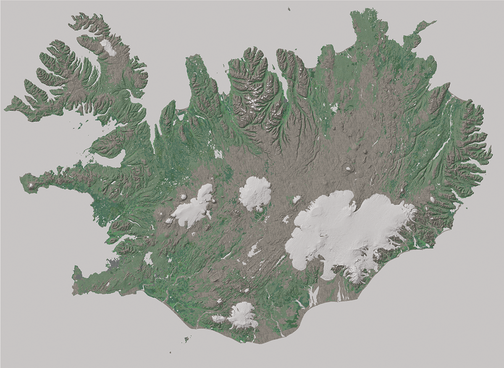
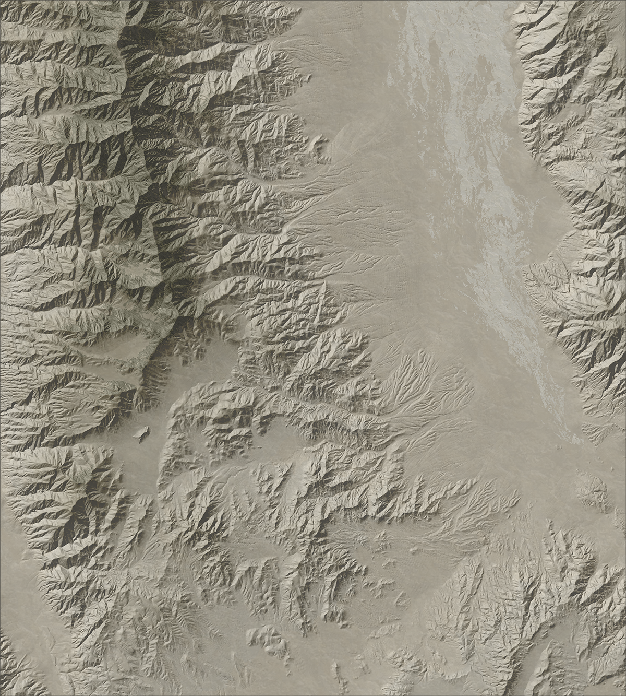
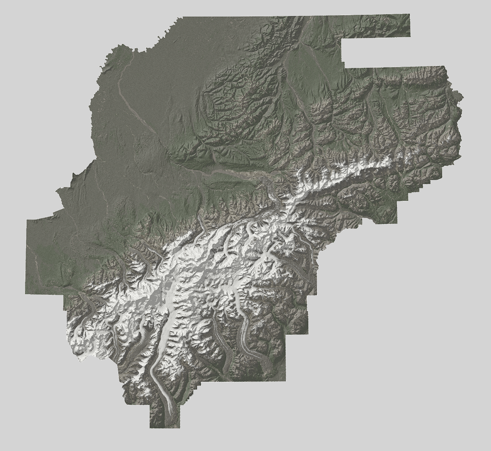
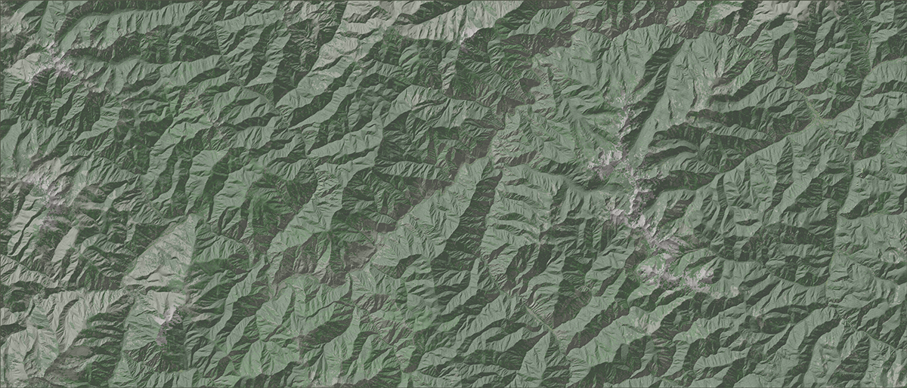

This is a sampling of some of the realistic-basemaps I've created using ArcMap and Adobe Photoshop.
Iceland. Created using National Land Survey of Iceland DEM data and Copernicus EU land cover data.
Badwater Basin & Southern Panamint Mountains, Death Valley, CA. Created using USGS DEM & landcover data.
Denali NP, Alaska. Created using National Park Service DEM & landcover data.
North of Stanley, ID. Created using USGS DEM & Land Cover data. This is the background image for this website!
